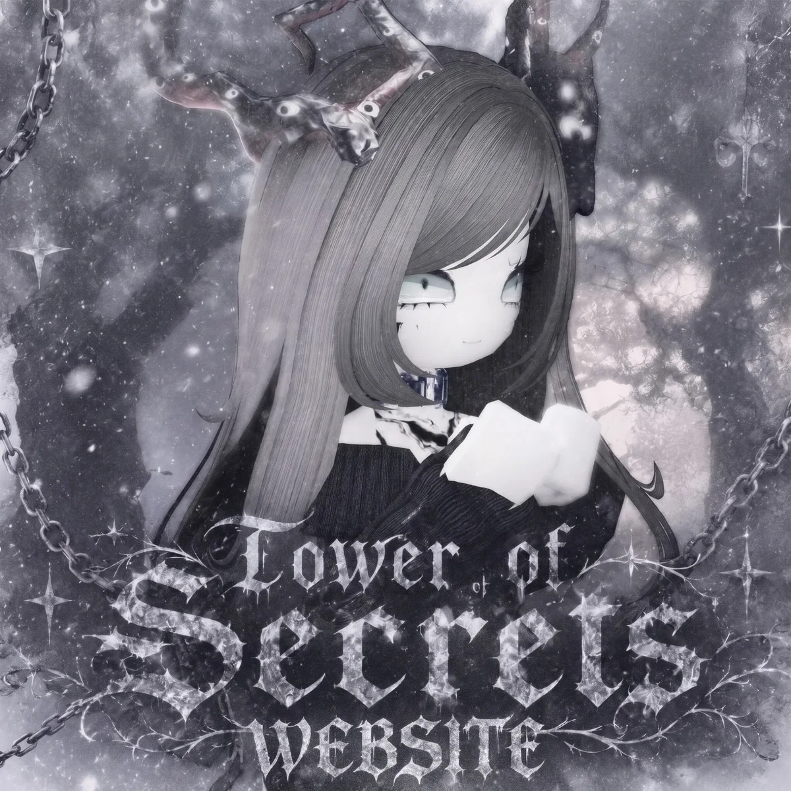

Секретки, поддержка и команда — в одном боте
Пишите в поддержку, подавайте жалобы и заявки, следите за секретками и фарм-серверами. Всё работает в Telegram.

Секретки сейчас
Последние секретки из канала. Сами ссылки и серверы видят только подписчики канала.
За последние сутки секреток не было. Загляните позже или подпишитесь на канал, чтобы не пропустить.
Что умеет бот
Всё, что нужно игроку, собрано в одном меню.
Секретки
Актуальные секретки и фарм-серверы публикуются в канале. Закрытые серверы помечаются автоматически.
Жалобы
Расскажите о нарушителе, приложите доказательства. Обращение попадёт к команде.
Обжалование бана
Считаете блокировку ошибочной? Подайте заявку, и её рассмотрят.
Вопросы
Задайте вопрос команде. Ответ придёт прямо в чат с ботом.
Платные услуги
Дополнительные возможности за Telegram Stars. Подробнее об услугах
Приглашайте друзей
Зовите друзей в канал и получайте бонусы за подтверждённые приглашения.
Нужна помощь?
Выберите, что нужно. Кнопка откроет бота и сразу начнёт нужную анкету. Если вы ещё не подписаны на канал, бот сначала попросит подписаться.
Жалоба на игрока
Расскажите о нарушителе и приложите доказательства. Обращение попадёт к команде.
Подать жалобуЗадать вопрос
Не нашли ответ на сайте? Спросите команду, ответ придёт прямо в чат с ботом.
Задать вопросОбжалование бана
Считаете блокировку ошибочной? Опишите, что произошло, и заявку рассмотрят.
Обжаловать банКак начать
Три шага, это займёт минуту.
Откройте бота
Нажмите «Открыть бота» и отправьте /start.
Подпишитесь на канал
Бот может попросить подписаться на @ToHSecretss, он подскажет, как.
Выберите раздел
Жалоба, вопрос, обжалование бана или платные услуги — всё в меню под сообщением.
Хотите в команду?
Набор открывается время от времени. Актуальный статус показан ниже и берётся прямо из бота. Если набор открыт, кнопка сразу откроет анкету в Telegram (при необходимости бот попросит подписаться на канал). Если закрыт, можно подписаться на уведомление: бот напишет, когда набор начнётся.
Хелперы
Помогайте игрокам: отвечайте на обращения и разбирайте жалобы.
Подать заявкуСейчас набор закрыт. Следите за объявлениями в канале.
🔔 Сообщить, когда откроетсяИскатели секреток
Находите секретки и делитесь ими с сообществом.
Подать заявкуСейчас набор закрыт. Следите за объявлениями в канале.
🔔 Сообщить, когда откроетсяЧастые вопросы
Не нашли ответ? Спросите в боте.
Это бесплатно?
Поддержка, жалобы и вопросы бесплатны. Платные услуги необязательны и оплачиваются Telegram Stars прямо в боте.
Почему бот просит подписаться на канал?
Канал — главное место с секретками и новостями. Подписка помогает ничего не пропускать.
Как быстро отвечают?
Время ответа зависит от загрузки команды. Все обращения приходят хелперам сразу, ответ вы получите прямо в чате с ботом.
Что делать, если меня заблокировали?
Нажмите «Обжалование бана» в боте и расскажите, что произошло. Заявку рассмотрит команда.
Где хранятся мои данные?
Что именно мы храним и зачем, описано на странице «Конфиденциальность».
Проект связан с Roblox?
Нет. Это независимый проект сообщества. Roblox и Tower of Hell — торговые марки их владельцев.